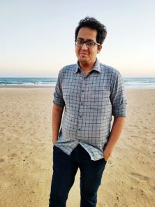

CV (Last update : March 2022)
Presentation
Research interests :
- Algebraic number theory, Arithmetic geometry, Langlands program, Congruences of automorphic forms, Cohomology of Shimura varieties, p-adic modular forms, Galois representations, p-adic Hodge theory.
- Analytic number theory, Counting arithmetic objects, L-functions and their properties.
(Pre-)publications :
Teaching
- Beijing International Center for Mathematical Research - I taught in minicourses and seminars aimed at graduate students and faculty.
- Minicourse on Almost Galois descent.
- Minicourse on local deformation rings.
- Reading Seminar on Simplicial rings and derived de Rham complex.
- Boston University - I served as teaching assistant and faculty on a variety of courses.
- MA 341 : Faculty for the Introduction to Number Theory Course. (Summer 2014)
- MA 124 : TA for Calculus II (Fall 2010, Spring 2014, Spring 2015, Spring 2016)
- MA 121 : TA for Calculus for the Life and Social Sciences I (Spring 2011, Fall 2011, Spring 2012, Fall 2012)
- MA 225 : TA for Multivariate Calculus (Spring 2013, Fall 2013)
- MA 123 : TA for Calculus I (Fall 2014, Fall 2015)
- Program in Mathematics for Young Scientists (PROMYS) - This is a Summer program aimed at bright High School students, held at Boston University. It aims to foster the spirit of mathematical exploration and discovery in the participants. I currently serve as an Associate Director and Faculty for PROMYS India, which is an offshoot of the parent program for Indian students. PROMYS India 2023 will happen at the Indian Institute of Science, Bangalore between May 7 - June 17, 2023. I have also served as a counselor for teachers in PROMYS in 2012 and 2014.
- The Yau Tsinghua Mathcamp (Tsinghua Mathcamp) - This is an intense Summer program aimed at talented High School students, held at Tsinghua University. It aims to enable students to learn about mathematics of modern times and have access to modern mathematical research. I was a faculty there in 2019. I taught a course on Bernoulli Numbers and Dirichlet L-functions in Number Theory.
CMI Mathematics Colloquium
I and Siddhi Pathak are organizing the CMI Mathematics Colloquium in Spring 2023. Please visit the colloquium page for more details.
Mathematical Writings and Talks
Notes (typed by John Bergdall) for a talk I gave at the p-adic Hodge Theory Seminar at Boston University on the Serre-Tate equivalence between formal groups and connected p-divisible groups. I take responsibility for any errors that you may find.
Notes for a talk I gave on Iwasawa Cohomology at a Reading seminar on Galois representations and (φ,Γ)-modules at BICMR.
Slides for a talk I gave on étale cohomology of Drinfeld half-spaces at a Reading Seminar on Cohomology of p-adic period domains at the Morningside Center of Mathematics, Chinese Academy of Sciences. (This was Talk 6 in a series of talks given by myself and others, so they include references to previous talks.)
YouTube video of an expository talk I gave at a Workshop on Perfectoid Spaces on p-adic automorphic forms and completed cohomology.
What does a circle know about primes? is a video of an expository talk I gave to young PROMYS students on Cyclotomic polynomials and Dirichlet's theorem on Infinitude of primes in arithmetic progressions.
I occasionally write articles on mathematics in my native language, Marathi. These are of an expository nature, intended for public consumption. Here are some selected articles, published on a Marathi portal maayboli.com, which is the largest and the first ever forum on the internet in Marathi language.